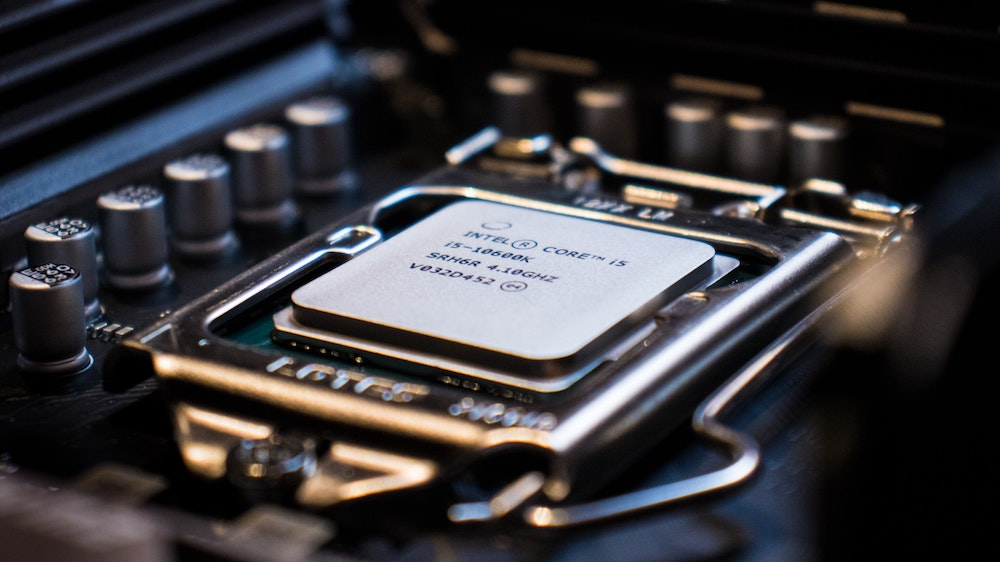

The first central processing units were invented in the 1950s by the Eckert-Mauchly Computer Corporation. They were not used by the average person due to size, lack of applications, and expense. CPUs during that time were much different from the now multi-core CPUs. They began by using vacuum tubes, then transistors, and then microprocessors.
The central processing unit is dubbed so due to its massive processing power. The CPU has dramatically decreased in size and has had an inconceivable increase in efficiency for both energy cost and processing power. An average CPU can execute BILLIONS of bits per second. If you don’t know bits are those 1s and 0s.

To relate the central processing unit to a part of the body, it would be the brain. Everything that interacts with you and you with it goes through the brain. Everything you do on a computer must pass through the CPU. For instance, when you type on your keyboard the controller chip in the keyboard sends a signal to the CPU and the CPU dictates how that signal is interpreted and sends instructions to the monitor to display the letters you typed. CPUs are in most of our technology today, even some coffee makers have one.